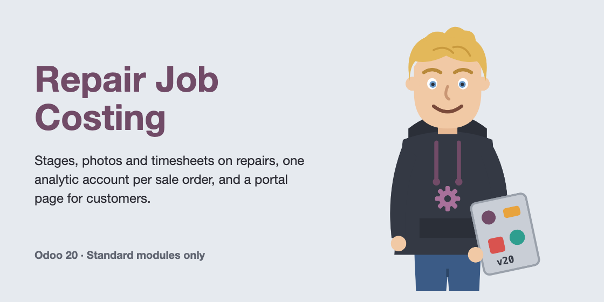
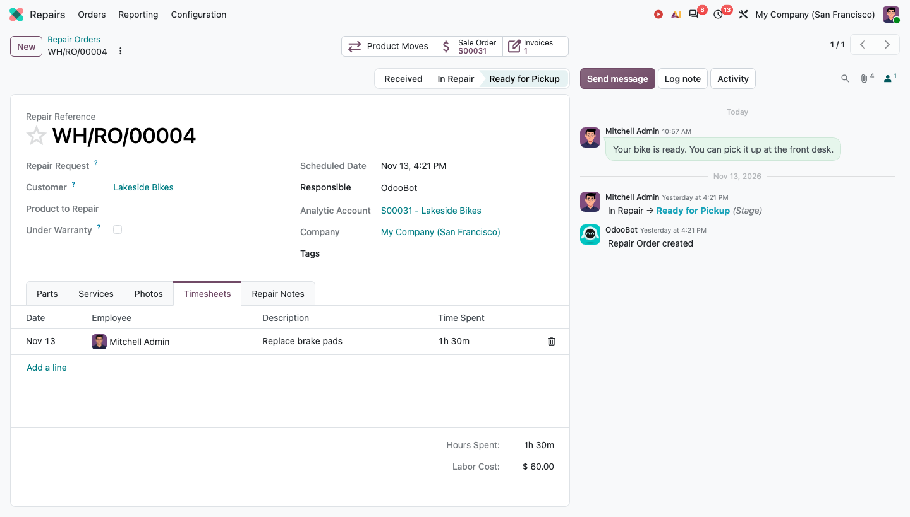
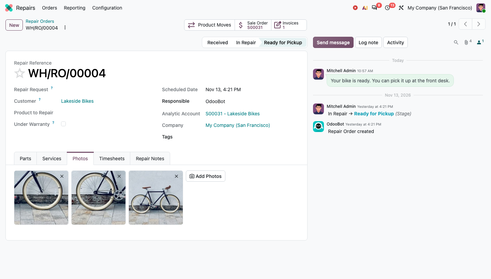
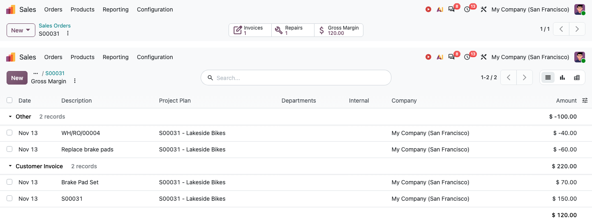
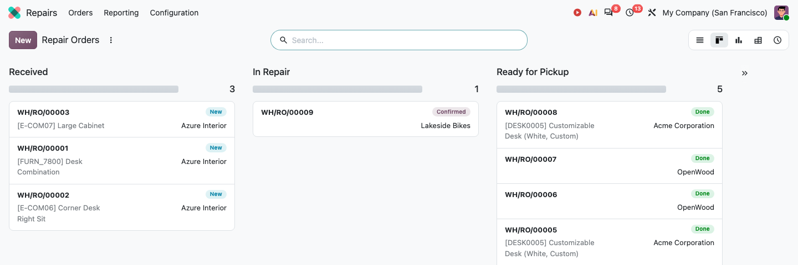
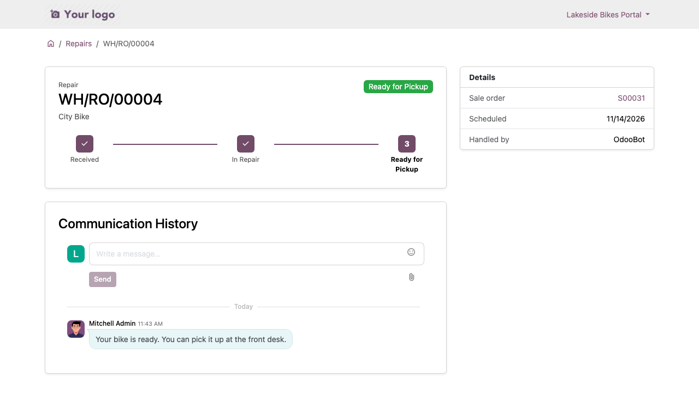

Adds stages, photos, timesheets and job costing to the Repairs app, with one analytic account per sale order and a portal page where customers follow their repairs.

Repair with its timesheets: hours and labor cost, and the analytic account of the sale order.

Repair photos: thumbnails that open full size.

Gross margin of a sale order: invoiced revenue, parts and labor on one account.

Repairs by stage.

The customer's repair page in the portal.
